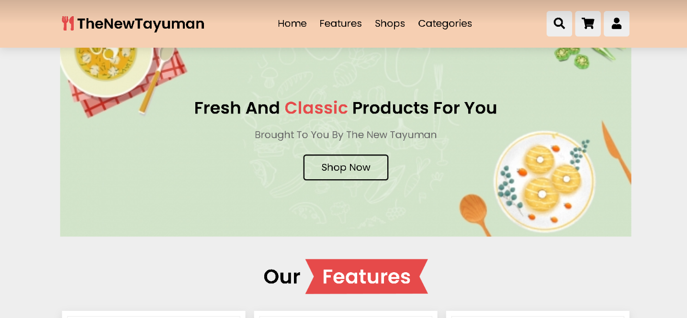
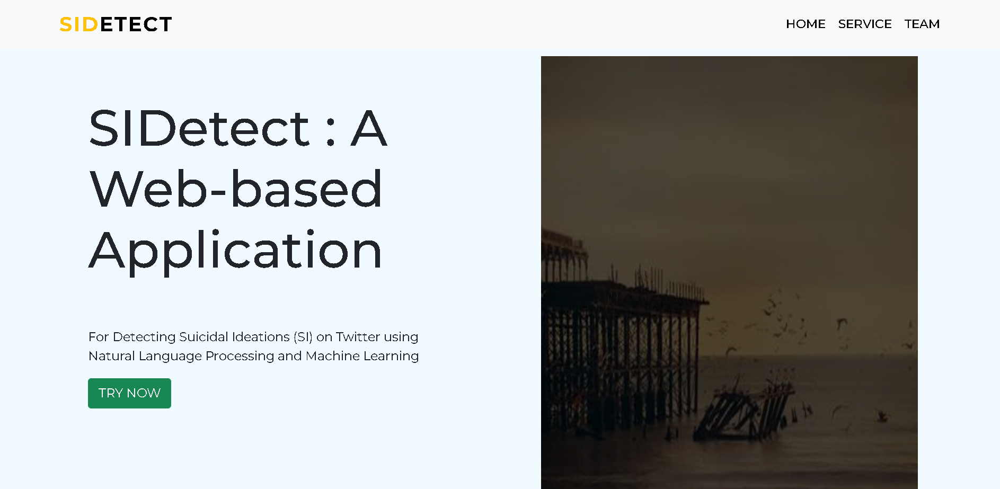
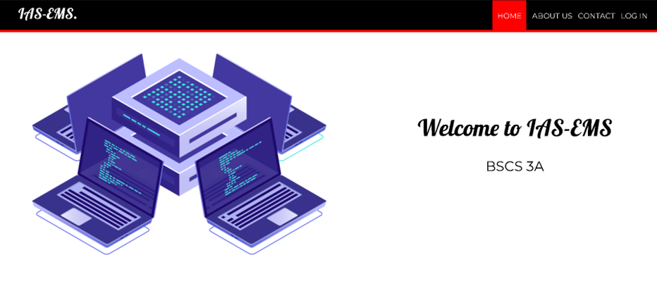
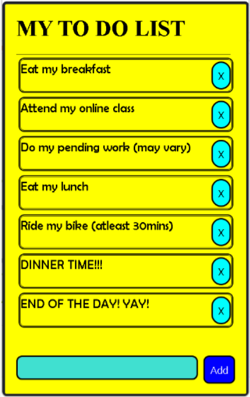

My Projects
The New Tayuman
The New Tayuman is an E-commerce Web Application. This website is our Final Project for our "Software Engineering" Class.

SiDetect
SiDetect is a Web-based Application for Detecting Suicidal Ideations (SI) on Twitter using Natural Language Processing and Machine Learning. This is our capstone project for our "Thesis Writing" subject.

IAS-EMS
IAS-EMS is a Web-based Application specifically for employee management system hence, the name 'EMS'. This is our project for our "Information Assurance and Security" subject.

My TO-DO-LIST
My TO-DO-LIST is programmed using react native during my second year as a BSCS student. This app can be used when you're into setting your goals. Also, you can construct and remove your to-do-list here.
